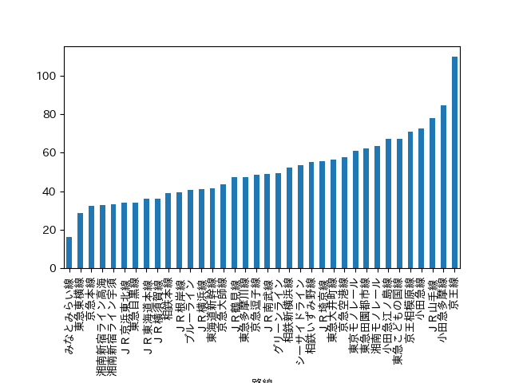
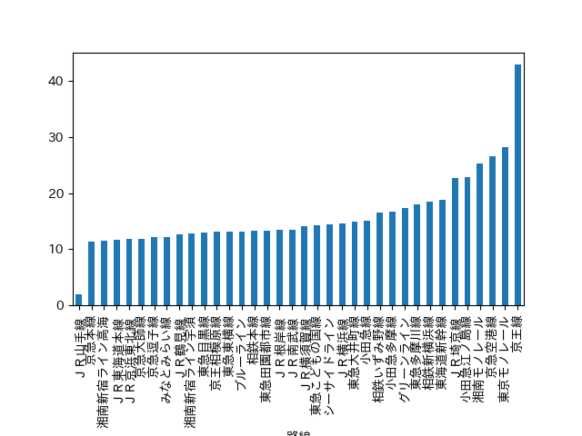
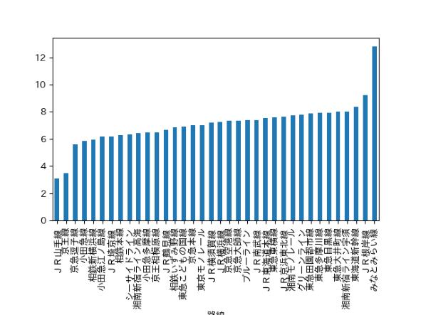
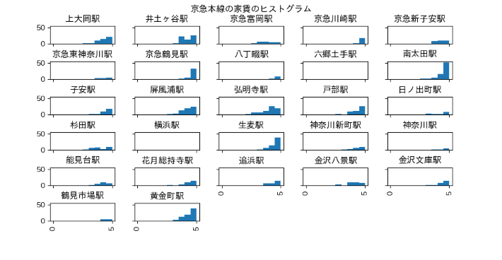

ドキュメンテーションと公開
賃貸情報の分析
①おすすめ物件の条件
- 自分が一人暮らしを始める時に、住む家を決めるときに実際に気にした条件を考えた。
- 家賃の安さ、駅や学校からの距離、を重視して分析してみました。
- 第１に学校からの距離、第２に家賃の安さ、第３に駅からの距離を重視して分析する。
②分析(距離)

- まず、36路線の中から学校からの距離と物件から駅が近い物件が多い路線を探していくつかの路線に絞る。
- 合計時間の平均、物件から駅までの距離の平均を路線別にグラフを出し、どちらのグラフにも上位にいる路線を選び出す。
- ただ、合計時間が少ない＝都会で地価が高いため家賃が高くなってしまう。その中でも、京急本線・湘南新宿ライン高海・JR東海道本線の路線はどちらの分野にも上位にいる。
- 次に家賃のグラフを見てみる。家賃のグラフは上位二駅と下位二駅がずば抜けているものの、そのほかの駅は5～6万であまり差が無いことがわかる。
- この3つのグラフから条件の優先順に上位の駅をよりあげると、学校からの距離、駅からの距離ともに上位に位置する京急本線に路線を絞る。
- ここから京急本線の中から条件にあった駅を探していく。
③分析(京急本線)
- 京急線の中から駅を絞るに当たって、駅の近くの物件が多いか、家賃の安さでエリアを絞っていく。
- 自分が実際に一人暮しの時に家賃6万円以下、駅から歩いて15分以下の文献を探していたので今回もその条件で絞っていく。

- このグラフ家賃5万円以下、徒歩駅から15分以内にある物件を出した物。
- このグラフから南太田、子安、塀風浦、弘明寺、戸部駅付近がおすすめエリアだと考える。
④ソースコード
- import pandas as pd # データ分析に用いるライブラリ
- import matplotlib.pyplot as plt # グラフ表示に用いるライブラリ
- pd.set_option('display.unicode.east_asian_width', True) # 表示のずれを少し緩和
- plt.rcParams['font.family'] = 'IPAexGothic' # グラフ表示におけるフォントの指定
- data_path = "./data.csv"
- df_data = pd.read_csv(data_path, encoding="utf-8-sig")
- mask = (df_data["路線"] == "京急本線") & (df_data["徒歩"] < 15) & (df_data["家賃"] < 6)
- print(df_data[mask])
- axes = df_data[mask].loc[:, "家賃"].hist(by=df_data[mask].loc[:, "駅"],
- range=(0, 5), bins=10,
- figsize=(10, 8),
- sharex=True, sharey=True)
- plt.suptitle("京急本線の家賃のヒストグラム") # グラフタイトル
- plt.subplots_adjust(top=0.9,
- hspace=1)
- plt.show()
⑤班の発表power point
班プレゼンテーション
デザイン演習トップページ
XBPトップページ